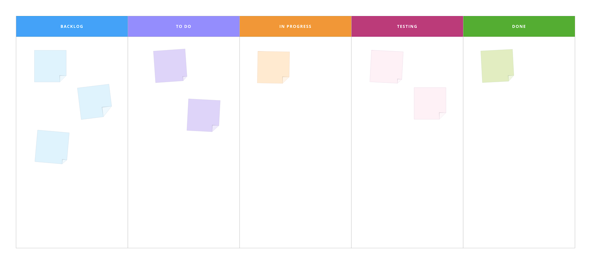

칸반과 스크럼의 차이
칸반과 스크럼은 프로젝트 목적 달성을 위해 사용하는 프로세스 도구이다. 스크럼은 럭비에서 차용된 것으로 스크럼은 세 명 이상의 선수가 공을 에워싸고 서로 어깨를 맞대어 버티는 공격 태세를 의미하는데, 팀워크를 강조하기 위한 용어다. 스크럼은 스프린트 기반의 점직적인 개발 방법론 이다. 칸반은 칸반이란 일본어로 카드나 눈에 보이는 기록이라는 것을 뜻한다. 적시생산시스템(Just in time)과 같이 순서가 정해진 공정에서 작업의 순서를 통제하는데 사용된다. 칸반과 스크럼의 차이는 다음과 같다.
| 칸반 | 스크럼 | |
|---|---|---|
| 규범 수 | 많다 | 적다 |
| 역할 구분 | 없음 | Product Owner, Scrum Master, Team |
| 작업 추가 | 가능 | 어려움 |
| 스프린트 | 스프린트 수행 여부는 팀이 결정 | N번의 스프린트(2~4주) 진행 |
| 백로그 우선순위 | 백로그 우선순위를 고려하지 않음 | 백로그 우선순위를 고려함 |
| 일의 양 결정 | X | O - 스프린트 마다 일의 양이 결정됨 |
규범수와 역할 구분 관점에서 보면 이 둘 간의 차이를 알 수 있다.
-
규범 수 : 칸반은 스크럼에 비해 덜 규범 적이며 일의 우선 순위를 강요하지 않는다. 다른 방법론과 규범 개수 기준으로 비교해 보았을때 규범 정도는
RUP >>> XP >스크럼 > 칸반순으로 볼 수 있다. -
역할 구분 : 칸반은 역할 구분이 없지만, 스크럼의 역할 구분은 세가지 종류로 구분되며 Product Owner는 무엇을 할지를 결정 하는 역할을 하며,Scrum Master는 프로세스 적용을 지원하며 장애물 제거 역할을 하는 사람을 말한다. Team은 실재 개발에 관여하는 개발팀을 의미한다.
나머지 요소도 살펴 보면, 칸반은 스크럼에 비해 작업 추가에 있어서 유연하며, 스프린트를 수행할지 여부를 팀이 결정한다. 따라서 생성된 백로그도 우선순위를 고려 할지를 고려하지 않아도 되며, 일의 양을 결정하지 않아도 된다.
칸반 보드
간트 차트의 맹점은 작업 단위에 이슈 여부가 있는지 확인이 되지 않는다는 점이다. 이렇게 되면 간트 차트에 등록된 태스크는 완료 되지 않은 상태로 존재한다. 칸반 보드는 이러한 문제를 해결 책이 된다.

칸반은 게시판은 크게 BACKLOG, TO-DO, IN PROGRESS, TESTING, DONE으로 나눠 의 흐름을 시각적으로 파악할 수 있게 돕는다. 여기서 BACKLOG는 프로젝트의 요구사항, 이슈 사항등을 포함해 우선 순위로 나열한다. 칸반은 서비스를 이용해 작성 관리할 수 있지만 포스트잇을 이용해 할 수 도 있다.
Rust